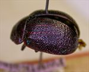
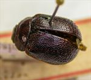
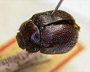
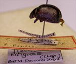
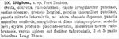

Click on images to enlarge
.jpg){kind=link}

Fig. 1. Paropsis litigiosa type specimen, lateral view
.jpg){kind=link}

Fig. 2. Paropsis litigiosa type specimen, dorsal view
.jpg){kind=link}

Fig. 3. Paropsis litigiosa type specimen, oblique view
.jpg){kind=link}

Fig. 4. Paropsis litigiosa type specimen & labels
{kind=link}

Fig. 5. Paropsis litigiosa, description
Name
Paropsis litigiosa Chapuis, 1877
Corresponds to
From the length (given in Chapuis' description) and the HCE/BL ratio (measured from the type), as well as the type locality of Port Denison (North Queensland), this is very likely to be Ta38, a relatively abundant species in almost the whole of eastern Queensland. The raised, longitudinal interstices are not as prominent in typical specimens of Ta38 as in the type, but are certainly at least partially present in many specimens. Another species that would fit structurally, and where the longitudinal ridged interstices are as prominent as in the type is Ta20 (T. solitaria), but that species is not known from north of the Stanthorpe area in S.E. Queensland.
Diagnosis and Notes
Blackburn (1896, p.640) indicates that he has not seen this species and does not include it in his key to the species.
Type specimen
Location: RBINS
Label data: /“Port Denison”/ “Coll. Chapuis”/ “TYPE”/ “P. litigiosa Chp P. Denison”/ “Type”/ “Trachymela litigiosa (Chap) ref. M. Daccordi 2007”/.
probably a male; HCE/BL = 15.2% (estimate from a photograph of lateral view of type).
Original description
Translation of original description (Figure 5) by ChatGPT, 04/2026:
Ovate, convex, reddish-brown. Head irregularly punctate, the vertex dark. Pronotum longer (i.e. relatively elongate), more sparsely and unevenly punctate, with minute punctures intermixed; at the sides obscurely depressed, with larger punctures crowded; margins and the disc on each side pitchy. Scutellum smooth. Elytra deeply punctate-striate; with nine reddish-brown interstices, toward the apex fairly strongly tuberculate, the 3rd and 5th somewhat broader. Length 10 mm. (Port Denison)
References
Chapuis, F. 1877, "Synopsis des espèces du genre Paropsis", Annales de la Société Entomologique de Belgique (Comptes-rendus), vol. 20, 67-101 (page 93).
Copyright © 2026. All rights reserved.